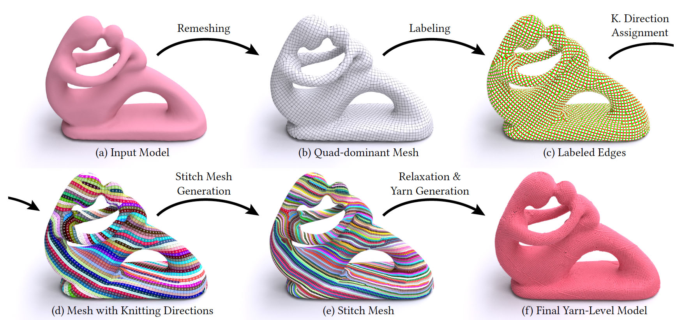
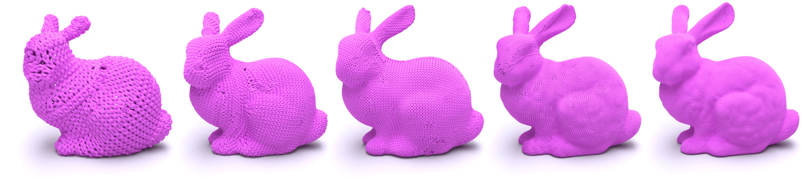
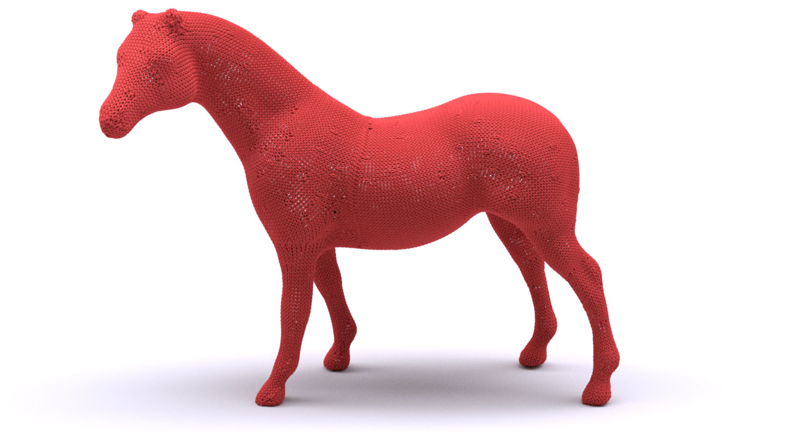
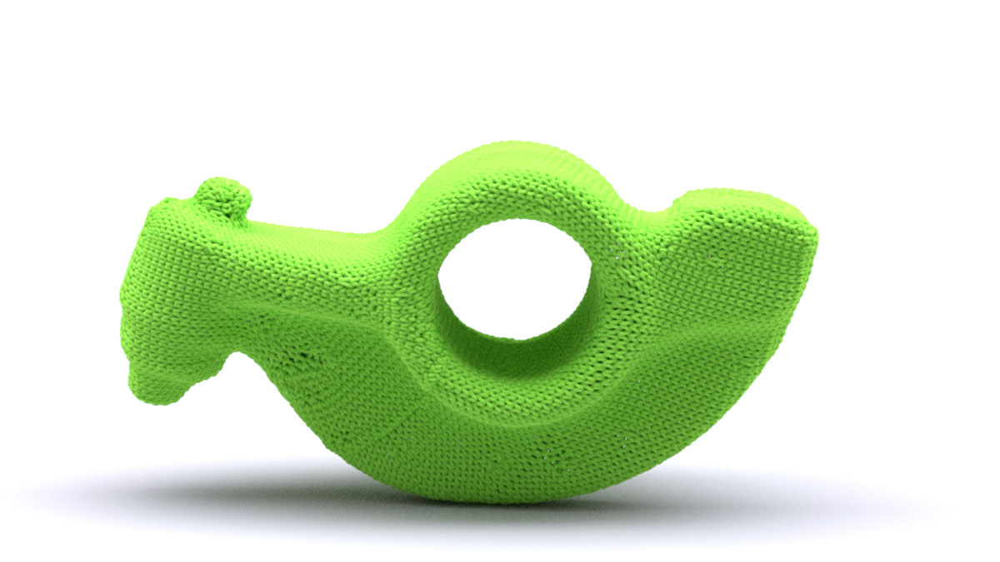
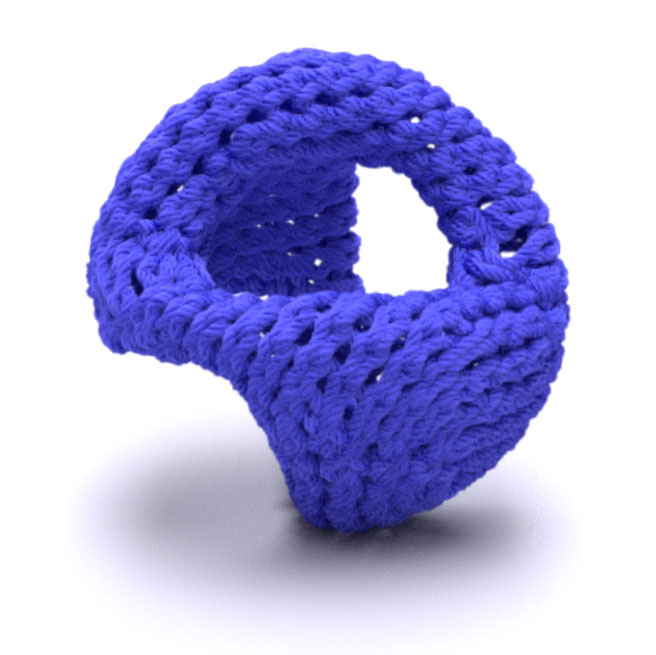
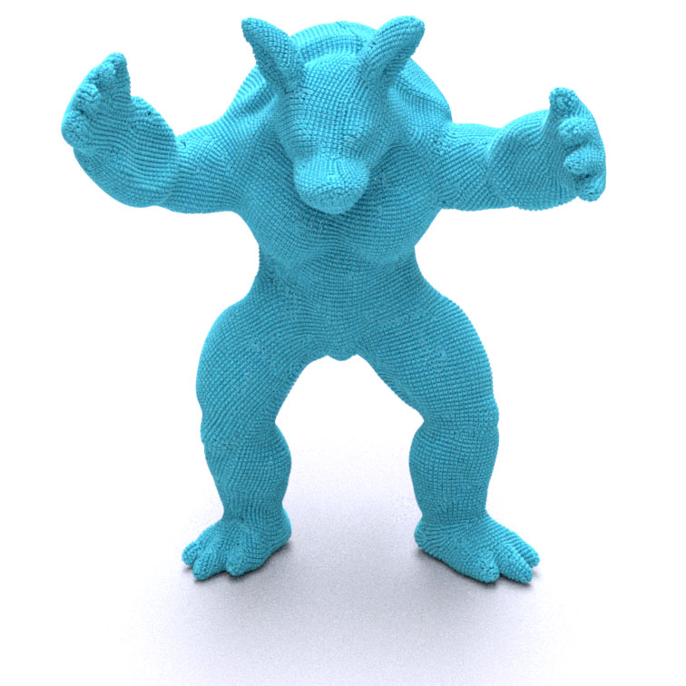
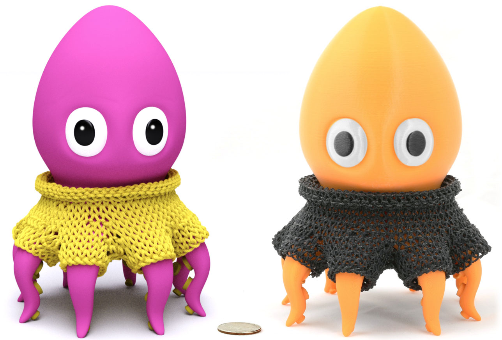
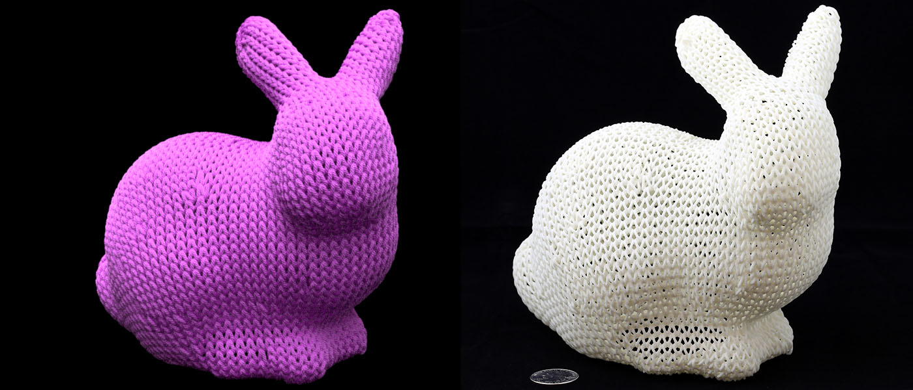

SIGGRAPH 2018
Stitch Meshing
Kui Wu, Xifeng Gao, Zachary Ferguson, Daniele Panozzo, Cem Yuksel

Example yarn-level models generated from input 3D surfaces using our fully automatic pipeline.
Abstract
We introduce the first fully automatic pipeline to convert arbitrary 3D shapes into knit models. Our pipeline is based on a global parametrization remeshing pipeline to produce an isotropic quad-dominant mesh aligned with a 2-RoSy field. The knitting directions over the surface are determined using a set of custom topological operations and a two-step global optimization that minimizes the number of irregularities. The resulting mesh is converted into a valid stitch mesh that represents the knit model. The yarn curves are generated from the stitch mesh and the final yarn geometry is computed using a yarn-level relaxation process. Thus, we produce topologically valid models that can be used with a yarn-level simulation. We validate our algorithm by automatically generating knit models from complex 3D shapes and processing over a hundred models with various shapes without any user input or parameter tuning. We also demonstrate applications of our approach for custom knit model generation using fabrication via 3D printing.
The overview of our pipeline: (a) an arbitrary input 3D model is converted into (b) an isotropic quad-dominant mesh with only quads and triangles via remeshing. Then, (c) the edges of the mesh are labeled, and (d) knitting directions over the surface are determined (arrows showing the wale knitting direction on each face). Finally, (e) a stitch mesh is generated and (f) the final yarn-level model is produced from the stitch mesh via relaxation and yarn generation operations.
[Paper] [Video] [Code] [Citation]

Yarn-level knit structures generated from the “bunny” model with three different resolutions: 1.3K, 4K, 7K, 16K, and 48K stitches
More results    
{kind=link}
{kind=link}
{kind=link}
{kind=link}
3D prints  
{kind=link}
{kind=link}